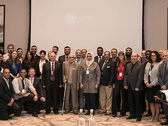
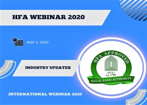

Halal Food Foundation
| Ensuring Halal Compliance
| Ensuring Halal Compliance
HFF releases updated guidelines for food processing facilities seeking Halal certification to align with international standards.
HFF signs MoU with Saudi Food and Drug Authority to streamline Halal certification for UK exporters.
Successful completion of our Halal certification workshop for restaurants and food service providers in London.
Join us for our annual conference featuring industry leaders discussing the future of Halal certification.
We've launched a new online portal for easier application tracking and certification management.
The Halal Food Foundation (HFF) is a UK-registered charity (1139457) dedicated to promoting the understanding and accessibility of halal principles. We believe halal is more than dietary rules—it's a holistic lifestyle encompassing health, cleanliness, and ethical consumption.
Through education, training, and community engagement, we empower individuals and organizations to make informed choices about halal living.

To promote understanding and accessibility of halal principles through education, training, and community engagement, empowering individuals to make informed halal lifestyle choices.
A world where halal living is accessible, understood, and appreciated by all, fostering healthier, more ethical, and spiritually conscious communities globally.
Our distinguished Board of Trustees comprises visionary leaders with diverse expertise in Islamic jurisprudence, food science, business management, and international trade. They provide strategic guidance, ensure Shariah compliance, and uphold our commitment to promoting authentic Halal practices worldwide.
Having acquired the highest professional qualifications in Finance, Accounting and Administration in the UK as Chartered Management Accountant and Chartered Company Secretary and Administrator, Dr Khan has worked at senior management positions in Asia, Africa and Europe. Dr Khan has been involved with the HFA since its inception as one of the founding members of the BOT.
Dr Ghayasuddin Siddiqui, a PhD in Chemistry is a well-known activist, campaigner, writer and expert on Muslim political thought. Dr Siddiqui has promoted dialogue and engagement across all barriers: religious, social, cultural and political; and was the founding chairman of the Halal Food Authority.

Ehsan Choudhry is a graduate in Urdu, a General Secretary of Pakistan Welfare Association Hounslow, a research scholar and a world famous poet and author of seven books. Topping all of that with a heart of gold, Ehsan is also a pioneer volunteer of HFA since 1995 , the owner of an established business and a responsible journalist in the UK.

Mr Ahmed Latif is presently CEO of A & M International Limited, which is a metal trading company and part of AMIDT Group of Dubai. Mr Latif Graduated in Commerce in 1963 from Karachi University and secured First Class First Position and was also awarded Gold Medal for his academic achievements. Mr Latif is also a member of Lions Club and spends great deal of his time in charitable work.
Our trustees meet quarterly to review strategic direction, ensure financial accountability, and uphold the highest standards of Halal integrity. Each member brings unique expertise while sharing a common commitment to serving the Muslim community and promoting ethical consumption.
The Halal Food Foundation (HFF) offers grants to support charitable initiatives that align with our mission of promoting halal awareness and education. We aim to support projects that contribute to the understanding and accessibility of halal principles within communities.
Applications to the Halal Food Foundation can only be accepted from registered charities as recognised by the Charity Commission. Grant applications should be sent in a written format to HFF at Finchley House, 707 High Road, Finchley, London, N12 0BT.
The application letter should comprise full details of the organisation, the grant requested, what it is for and how the grant will be spent, and any deadlines. Do not send any further information at this stage. If HFF requests further information, this should be provided as soon as possible.
For any questions about the grant application process, please contact us using the contact form below.
Contact Us for Grant InquiriesStay informed about our participation in important industry events, webinars, and discussions. We document key debates, dialogues, and issues that shape the future of Halal certification and food standards.



Want to stay updated on our upcoming events and webinars?
Contact Us for Event InformationUnit 15, Linen House, 253 Kilburn Lane, Queen's Park London, W10 4BQ United Kingdom
+44 (0) 208 4467 127
info@halalfoodfoundation.co.uk
Woodside Park (Northern Line) - 10 min walk
West Finchley (Northern Line) - 12 min walk
Have questions about Halal certification? Our team is ready to assist you with the certification process and answer any questions you may have.
Address: Unit 15, Linen House, 253 Kilburn Lane, Queen's Park London, W10 4BQ United Kingdom
Phone: +44 (0) 208 4467 127
Email: info@halalfoodfoundation.co.uk